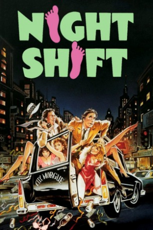

Country:United States, 106 minutes
Spoken languages:English
Genres:Comedy
Director(s):Ron Howard
Writer(s):Lowell Ganz, Babaloo Mandel
Video Codec:Unknown
Number: 2805


Certification:R
Storyline:
A nebbish of a morgue attendant gets shunted back to the night shift where he is shackled with an obnoxious neophyte partner who dreams of the "one great idea" for success. His life takes a bizarre turn when a prostitute neighbor complains about the loss of her pimp. His partner, upon hearing the situation, suggests that they fill that opening themselves using the morgue at night.
Cast:
Medium: VHS tape,
Loaned: No
Aspect ratio: Unknown